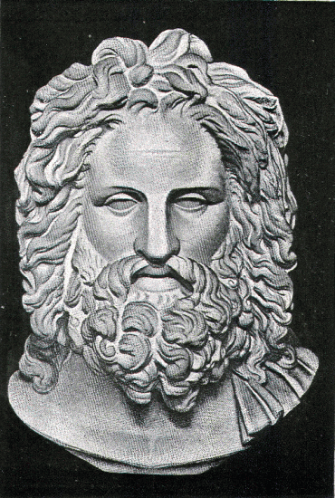

When the soldiers were assembled, Xenophon appeared among them clad in his most beautiful armour, as if for a feast, with a serene countenance, and eyes that glowed with hope and courage. When he was asked to speak, he addressed them in a clear, penetrating voice that all could hear. "Soldiers," he said, "in the terrible disaster that has befallen us, you see the result of trusting to the oaths of Barbarians. From henceforth we must regard them, not as allies, but as enemies, and fight to avenge the murder of our comrades. Thus by the help of the gods may we hope to be delivered out of their hands."
At this moment it chanced that one of the soldiers sneezed loudly. Nothing could have been more fortunate, for the Hellenes believed that a sneeze was a sign sent by the gods to confirm the word that had just been spoken. Such a good omen could not fail to cheer the downcast soldiers, and Xenophon paused in his speech, and proposed that all should unite in making a vow to Zeus the Saviour, from whom the sign had come, that as soon as they should again find themselves in a land of friends, they would offer thank-offerings to Zeus and the other gods. The proposal was accepted with acclamation, and all prayed together, and sang a hymn of praise.
After this, Xenophon continued to speak. "Our hope," he said, "rests on a sure foundation. We have been true to the oath sworn in the name of the gods, while the Barbarians have perjured themselves. The gods will not allow them to go unpunished; their anger will be turned against our enemies, and their help will be with us. They can humble the mighty and exalt the weak, and can, if they will, save us out of our distress.
"Let us not form too high an estimate of the Persian resources. The Mysians and the little nation of Pisidians defy the Great King. In the midst of his empire they live as free men, and have many large and flourishing cities. Are we at all inferior to Mysians or Pisidians? Think of our forefathers, and of the world-famed victories which they won. The Persians came with a mighty army to lay Athens in the dust, but the little band of Athenians met them with undaunted courage, and drove them back in disgraceful flight. After that came Xerxes with an army, countless as the sand of the sea. And what happened to him? Our forefathers overcame that army by sea and by land, and the glorious results of their victories continue to this very day. To this day our cities are free, and over us we acknowledge no other lords but only the eternal gods.

ZEUS.
"You yourselves moreover have been put to the test, and have not been found wanting. It is but a short time since you confronted the descendants of those same Barbarians. Their number was many times greater than yours, but with the help of the gods you smote them and they were scattered like chaff before the wind, not one of them could look you in the face. And at that time you were fighting for Cyrus, a stranger, to set him upon the throne. With how much greater zeal will you fight now, when the battle is for your own salvation!
"In the last place, let each one of us take heed to do his part. Our new chiefs must be even more vigilant and cautious than those we have lost; the soldiers must be more strictly obedient than hitherto. If every man will keep his eye upon the rest, and allow nothing to be done that is against the rule, then will our enemies be disappointed of their hope that in depriving us of our officers they have robbed us of all discipline."
As of an heroic deed, so too of an inspiring speech it may with truth be said that it "begets courage, even in a coward." The brave words of Xenophon put to flight the dark cloud of despair that had threatened to paralyse the energy of the soldiers, and prepared the way for a dawning of new confidence, and a hope that in their case also the old saying might once again prove true, that Fortune helps the brave."
The next thing to be done was to make preparations for continuing the march. Xenophon was, asked for his advice, and he answered, "Before everything else, it will be necessary to provide ourselves with food, now that we can no longer buy it in the Barbarian camp, and I hear that there are villages in the neighbourhood where we shall find what we want. The Barbarians will pursue us like cowardly curs, who run after a man, snapping at his heels. If he turns round upon them, they immediately run away, but as soon as he continues to go forward, they are after him again as before.
"I propose therefore that we adopt the form of a hollow square, and place in the centre the camp-followers and baggage-animals, that there may be no risk of their being cut off by the enemy. Let Cheirisophus take the post of honour and lead the van, as is fitting, for he is a Spartan, and let the two eldest generals take charge of the wings, while Timasion and myself command the rear. If after a time we wish to make any alteration, it will always be easy to change. He who has something better than this to propose, let him now speak."
All were silent.
"Hold up hands then, those who agree to my plan," cried Xenophon.
Every hand was raised, and the proposal was accordingly carried.
There was another matter to which Xenophon was anxious to call the attention of his comrades. He knew how serious a disadvantage it is to an army in the field to be encumbered with a quantity of baggage, and advised that everything not absolutely needed for the march should be burnt.
"He who would enrich himself with spoil," he said, "must overcome the enemy. Only conquerors can hold their own, and take the spoil of the vanquished. Whichever of you would see again those who are most dear to him, let him remember that he must prove himself a man."
This proposal was also carried by a show of hands, and the meeting being at an end, the soldiers dispersed to overlook their possessions, and choose from among them such things as were indispensable. If any of them had possessions which they themselves did not need, but which others lacked, they gave them to their comrades. Then a great bonfire was lighted, and into it were cast all the rest of the things, together with the tents and the wagons.
From this time forward the recognised heads of the army were Cheirisophus the Spartan and Xenophon the Athenian, but more especially Xenophon. All alike were agreed in thinking that these two men were the best fitted to command, and the other generals felt that by carrying out with alacrity whatever was proposed by them, they could most surely promote the present well-being and ultimate salvation of the brave Ten Thousand.